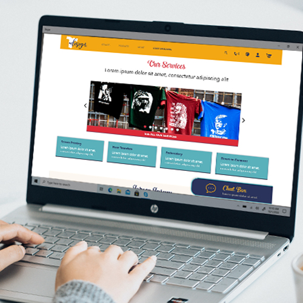

<!-- Main Content -->
<div id="main">
    <div id="container-btm" class="container">
        <section id="blue_bk">
            <div id="prtfolio_header">
                <p></p>
            </div>
            <br>

            <!-- 123 Menu -->
            <div id="mini-menu_red">
                <span class="mini-link" onclick="loadContent('prtf_ux01_SweetBakery'); setActive(this)">1</span>
                <span class="mini-link" onclick="loadContent('prtf_ux02_TDesign'); setActive(this)">2</span>
                <span class="mini-link" onclick="loadContent('prtf_ux03_HealthyPatterns'); setActive(this)">3</span>
            </div>

            <!-- Project -->
            <div class="projBak">
                <br>
                <h3 class="projHeader">T-Design</h3><br>
                
                <p>Dedicated App</p>
                <br>
                <div class="projTxtA">
                    <h4 class="projHeader">The product</h4>
                    <p class="projTxt">T-design is creating a new website to help customers find and
                        customize their t-shirts from the comfort of their home. Patrons can upload t
                        heir own designs or resort to company’s provided text/clipart and place orders
                        for delivery.
                    </p>
                    <br>
                    <h4 class="projHeader">My role in the project</h4><br>
                    <p class="projTxt">&nbsp; &nbsp;
                        Plan and conduct user research and competitor analysis.</p>
                    <p class="projTxt">&nbsp; &nbsp;
                        Create user stories and personas.</p>
                    <p class="projTxt">&nbsp; &nbsp;
                        User Flow and usability testing.</p>
                    <p class="projTxt">&nbsp; &nbsp;
                        Create paper and digital wireframes.</p>
                    <p class="projTxt">&nbsp; &nbsp;
                        Visual Design, accounting for accessibility and iterating on designs.</p>
                    <p class="projTxt">&nbsp; &nbsp;
                        Low and high fidelity prototyping.</p>
                    <br>

                    <h4 class="projHeader">Duration</h4>
                    <p class="projTxt">2 months</p>
                    <br>
                    <h4 class="projHeader">Project goal</h4>
                    <p class="projTxt">Ideate and design a website for T-design that will improve ordering
                        experience of its clients by facilitating customization, ordering process and
                        delivery.</p>
                    <br>
                    <h4 class="projHeader">Target audience</h4>
                    <p class="projTxt">Busy individuals that lack the time necessary to visit a printing
                        shop in order to customize the needed apparel in person.</p>
                    <br>
                </div>

                <div class="projTxtB">
                    <h3 class="projSection">Empathize</h3>
                </div>

                <div class="projTxtA">
                    <h4 class="projHeader">Research study details</h4>
                    <p class="projTxt">I conducted interviews and created empathy maps to understand
                        target users and their needs. To acknowledge the specific challenges our
                        users might face in the customization, ordering, payment, and checkout
                        process on the new T-design website. A moderated usability study was
                        conducted with 5 participants that didn’t have time to visit a shop in
                        order to customize t-shirts in person. </p>
                    <br>
                    <h4 class="projHeader">Key challenges or constraints</h4>
                    <div class="myWorkContainer">
                        <!-- Gallery -->
                        <div class="uxMenu_row">
                            <div class="uxKey_column2">
                                <p class="keyTxt"><strong>Time and convenience</strong><br>
                                    Busy adults don't have the time to visit a printing shop in
                                    order to customize apparel in person.</p>
                            </div>
                            <div class="uxKey_column2">
                                <p class="keyTxt"><strong>Customization </strong><br>
                                    When customizing apparel online the user should be
                                    able to upload or add text/images in an straightforward process.</p>
                            </div>
                        </div>
                        <div class="uxMenu_row">
                            <div class="uxKey_column2">
                                <p class="keyTxt"><strong>Accessibility</strong><br>
                                    Other websites for ordering customized apparel do not
                                    accommodate people of all ages and abilities, including
                                    speakers of English as a foreign language.</p>
                            </div>
                            <div class="uxKey_column2">
                                <p class="keyTxt"><strong>Information architecture (IA)</strong><br>
                                    Small buttons and images on shopping websites make
                                    item selection difficult, which sometimes can lead to confusion.</p>
                            </div>
                        </div>
                    </div>
                </div>

                <div class="projTxtB">
                    <h3 class="projSection">Define</h3>
                </div>
                <div class="uxTnIContainer">
                    <!-- Gallery -->
                    <br>
                    <div class="uxImage_woTxt">
                        <p></p>
                    </div>
                </div>
                <div class="projTxtA">
                    <h4 class="projHeader">User Journey</h4>
                    <p class="projTxt">Mapping Brandon’s user journey
                        revealed how helpful and convenient would be for users to
                        have access to a dedicated customization apparel website.
                    </p>
                    <br>
                </div>

                <div class="projTxtB">
                    <h3 class="projSection">Ideate</h3>
                </div>

                <div class="projTxtA">
                    <h4 class="projHeader">Sitemap</h4>
                </div>
                <div class="uxTnIContainer">
                    <!-- Gallery -->
                    <div class="uxTnI_row">
                        <div class="uxTxt_wImg">
                            <p>
                                Difficulty with website navigation was a primary
                                pain point for users, so I used that knowledge to
                                create a sitemap.
                                My goal here was to make strategic information
                                architecture decisions that would improve overall
                                website navigation. The structure I chose was
                                designed to make things simple and easy.</p>
                        </div>
                        <div class="uxImage_wTxt">

                            <p></p>
                        </div>
                    </div>
                </div>
                <div class="projTxtA">
                    <h4 class="projHeader"> Sketches or wireframes</h4>
                </div>
                <div class="uxTnIContainer">
                    <!-- Gallery -->
                    <div class="uxTnI_row">
                        <div class="uxImage_wTxt">

                            <p></p>
                        </div>
                        <div class="uxTxt_wImg">
                            <p>
                                Paper wireframes enabled me to explore several options to address the
                                users need to access and customize the offered products in a convenient
                                way. I prioritized a quick and easy selection, customization and ordering
                                process to help users in the process. </p><br>
                        </div>
                    </div>
                    <br>
                </div>

                <div class="projTxtB">
                    <h3 class="projSection">Test</h3>
                </div>

                <div class="projTxtA">
                    <h4 class="projHeader">User testing results</h4>
                    <p class="projTxt">Two rounds of usability studies helped guide the designs from
                        wireframes to mockups. For the second study I used a high fidelity prototype
                        and revealed what features of the mockups needed to be rectified.<br>
                        <br>
                    </p>
                    <p class="projTxt"><strong>Round 1 findings</strong><br></p>
                    <ul class="projTxt">
                        <li>Checkout window didn't provide option to keep buying.</li>
                        <li>Participants needed to be aware of current location on site at all time.</li>
                        <li>Customization process needs to be more user friendly.</li>
                    </ul>
                    <p class="projTxt"><br><strong>Round 2 findings</strong><br></p>
                    <ul class="projTxt">
                        <li>Search option should be added to the main menu.</li>
                        <li>Chat box could be improved by adding a close button to it.</li>
                    </ul>
                </div>

                <div class="projTxtB">
                    <h3 class="projSection">
                        Prototype</h3>
                </div>
                <div class="projTxtA">
                    <h4 class="projHeader">High-fidelity prototype of final, polished designs</h4>
                </div>
                <div class="uxTnIContainer">
                    <!-- Gallery -->
                    <div class="uxImage_wTxt">
                        <p><br></p>><br></p>
                        <video width="500" height="auto" controls>
                            <source src="images/gallery_ux/TDesign/TDesign_web.mp4" type="video/mp4"
                                alt="High Fidelity Prototype"><br></p>>
                            <source src="movie.ogg" type="video/ogg">
                            Your browser does not support the video tag.
                        </video>
                        <br><br>
                    </div>
                </div>

                <div class="projTxtB">
                    <h3 class="projSection">Key Takeaways</h3>
                </div>

                <div class="projTxtA">
                    <h4 class="projHeader">Conclusion</h4>
                    <p class="projTxt"><strong>Impact:</strong><br>
                        The T-design website’s design includes features for users that
                        were not taken into consideration by our direct competitors.
                        The UX is consistent and perfectly aligned with the T-design’s
                        purpose of offering a pleasant and easy way for customers to
                        customize their products, resulting in an intuitive and user-friendly
                        experience for our target users, who shared that the design was
                        intuitive to navigate through, and demonstrated a clear visual
                        hierarchy.
                        <br><br>
                        <strong>What I learned:</strong><br>
                        I learned that even a small design change can have a huge impact on
                        the user experience. The most important takeaway for me is to always
                        focus on the real needs of the user when coming up with design ideas
                        and solutions. I also learned how important is to be thoughtful of
                        users expectations and needs in order to deliver a more personalized
                        customer experience.
                        <br><br>
                </div>

                <div class="projTxtB">
                    <h3 class="projSection">Next Steps</h3>
                </div>

                <div class="projTxtA">
                    <strong>Next steps:</strong>
                    </p>
                    <ul class="projTxt">
                        <li>Perform additional rounds of usability studies as needed in order
                            to verify that pain points have been effectively addressed.</li>
                        <li>Continue to explore how to improve accessibility in order to make
                            the website more functional.</li>
                    </ul>
                    <br>
                </div>
            </div>


            <!-- Menu cont. -->
            <div id="prtfolio_btm">
                <br><br>
            </div>
            <div class="myWorkContainer">
                <!-- Gallery -->
                <div class="uxMenu_row">

                    <div class="uxMenu_column2" onclick="loadContent('prtf_ux01_SweetBakery')">
                        <div class="uxContainer" style="cursor:pointer;">
                            
                            <div class="uxMenu_middle">
                                <div class="uxMenu_text">
                                    <p class="menu_prevw1">Google Design Challenge</p>
                                    <p class="menu_prevw2"><br>Dedicated App</p>
                                </div>
                            </div>
                        </div>
                        <p style="font-size:14px;">Sweet Bakery</p>
                    </div>
                    <div class="uxMenu_column2" onclick="loadContent('prtf_ux03_HealthyPatterns')">
                        <div class="uxContainer" style="cursor:pointer;">
                            
                            <div class="uxMenu_middle">
                                <div class="uxMenu_text">
                                    <p class="menu_prevw1">Google Design Challenge</p>
                                    <p class="menu_prevw2"><br>Dedicated App &amp; Mobile Website</p>
                                </div>
                            </div>
                        </div>
                        <p style="font-size:14px;">Healthy Patterns</p>
                    </div>

                </div>
            </div>
        </section>
    </div>
</div>